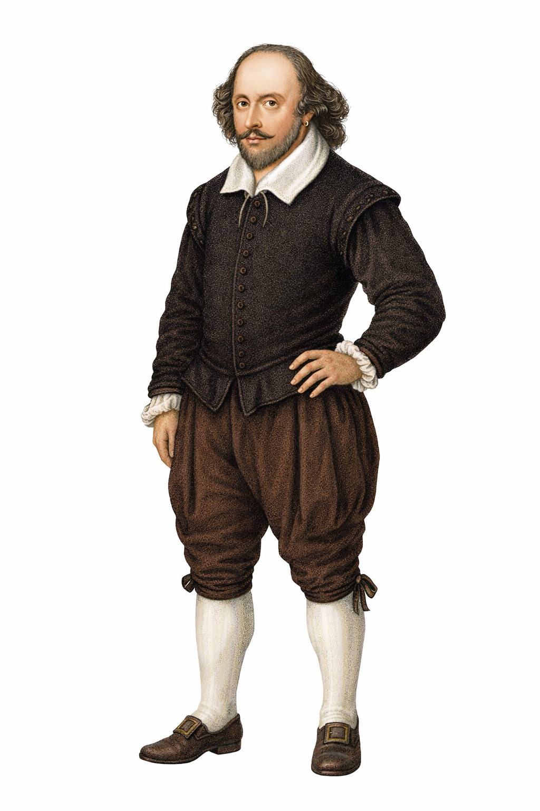

William Shakespeare (1564–1616) was an English playwright, poet, and actor. He is often called England’s national poet and the “Bard of Avon.” His works have been translated into many languages and performed more often than those of any other playwright.
Shakespeare was born in Stratford-upon-Avon, England. His father, John Shakespeare, was a successful businessman and town official. Shakespeare attended the local grammar school where he learned Latin literature and classical works.
In 1582, Shakespeare married Anne Hathaway, who was eight years older than him. The couple had three children:
Sadly, his only son Hamnet died at the age of 11.
Shakespeare moved to London in the late 1580s to pursue a career in theatre. He became an actor, playwright, and shareholder in the theatre company Lord Chamberlain's Men, which later became King's Men.
Many of his plays were performed at the famous Globe Theatre, where audiences from all social classes gathered to watch theatrical performances.
Shakespeare wrote about 39 plays, which are generally divided into three main categories.
These plays focus on serious themes and tragic endings.Famous tragedies include:
Shakespeare’s comedies often involve humor, romance, and happy endings.Popular comedies include:
These plays are based on the lives of English kings. Examples include:
Besides plays, Shakespeare also wrote 154 sonnets and several narrative poems. His sonnets are famous for their deep exploration of love, beauty, and time.
Some well-known works include:
Shakespeare introduced around 1,700 new words into the English language. His writing style includes poetic language, metaphors, dramatic conflict, and memorable characters.
Many common phrases today originated from his works, such as:
His influence can be seen in modern literature, movies, and theatre worldwide.
William Shakespeare died on April 23, 1616, in his hometown of Stratford-upon-Avon at the age of 52. He was buried in Holy Trinity Church.
Today, Shakespeare’s works continue to inspire writers, filmmakers, and scholars. His plays are translated into many languages and performed across the globe.
William Shakespeare remains one of the most influential writers in world literature. His timeless stories, unforgettable characters, and powerful themes continue to captivate audiences even after hundreds of years. Because of his extraordinary contribution to literature, he is often called “The Bard of Avon.”
Back to Blog